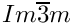

|
PSCF v0.9
|
3.3.6 pscf_fd (1D Problems) (Prev) 3.3.8 pscf_pg (Periodic Problems, GPU) (Next)
The pscf_pc and pscf_pg programs for periodic systems use nearly identical parameter file formats, and so are discussed together here.
An example of a parameter file for the program pscf_pc3D is shown below.
The main System block of a parameter file for any of the pscf_pc and pscf_pg programs for has the same overall structure as that used by pscf_fd program, and is described by the same format skeleton:
As for pscf_fd, the Sweep block is optional, and Iterator and Sweep blocks (if present) are both selectable blocks. The purposes of these top-level blocks have all been discussed previously in the discussion of pscf_fd, and will not be repeated here. Formats of the Mixture and Interaction blocks are the same for all PSCF programs, and so have also been discussed previously. Below, we discuss the contents of the Domain, Iterator, and Sweep blocks.
The Domain block contains information required to describe both unit cell of the periodic structure, the regular mesh that is used to discretize fields within each unit cell, and the space group of the desired solution. The parameter file format is discussed below, as well as in separate page here.
An example of the format of this block is shown below:
The unitCell, mesh and groupName parameter lines are discussed separately below.
unitCell
The line that begins with the label unitCell contains information required to specify an initial value of the crystal unit cell. The data on this line contains a string that specifies the desired crystal system followed by one or more unit cell parameters. The format is thus
where m denotes the number of independent parameters required to describe a unit cell of the specified crystal system. The allowed values of the crystalSystem string for a 3D structure currently include "cubic", "tetragonal" and "orthorhombic". The cubic crystal system used in the parameter file only requires one unit cell parameter, which is the length of each axis of a simple cubic unit cell.
Note: The list of unit cell parameters that is input in the parameter file is actually only used within an algorithm that constructs a set of symmetry adapted Fourier basis functions, and then discarded. Values of initial guesses for initial unit cell dimensions of a system to which we want to apply self-consistent field theory are obtained later by reading a file that contains an initial guess for the monomer chemical potential fields (w-fields), which also contains corresponding unit cell dimensions.
mesh
The value is the variable "mesh" is a vector of integers that specifies the number of grid points along each direction of the uniform spatial mesh used to discretize fields within each unit cell. The format is
where D is the dimension of space (i.e., the number of periodic directions), and N[i] is the number of grid points along axis number i, for i = 0,...,D-1.
groupName :
The value of the string parameter "spaceGroup" must be an standard identifier for the crystallographic space group of the desired structure. Each of the allowed values of the groupName string corresponds to a modified version of the name of the space group, as listed in the international tables of crystallography. In the above example, the groupName string I_m_-3_m is a modified form of the name  for the space group for a BCC lattice.
Identifiers for crystallographic space groups are discussed and listed here.
The default Iterator for the pscf_pc and pscf_pg programs uses an Anderson-Mixing (AM) iterator algorithm. This can be invoked using either the generic label "Iterator" or the specific label "AmIterator".
The only iterator currently available is an Anderson-Mixing iterator designed specifically for problems in which a polymer melt or mixture is confined to a thin film.
Descriptions of the parameter file formats for the available iterators can be found by following the links in the table below:
| Label | Description |
| AmIterator | Anderson Mixing iterator for periodic structures. |
| AmIteratorFilm | Thin Film Anderson Mixing iterator. Uses the Anderson Mixing algorithm to solve the SCFT equations for a system that is confined to a thin film. |
The default sweep for the pscf_pc programs is a linear sweep algorithm that can be invoked using a block that starts either with the generic label Sweep or the specific label LinearSweep. The required parameter file format has been described here.
3.3.6 pscf_fd (1D Problems) (Prev) 3.3 Parameter Files (Up) 3.3.8 pscf_pg (Periodic Problems, GPU) (Next)